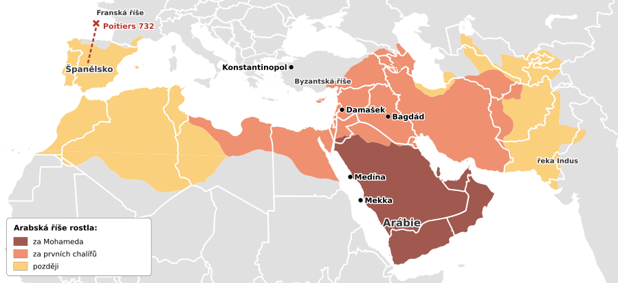

7.–9. století
Arabská říše a islám
V 7. století vzniklo v Arábii nové náboženství, islám. Arabové se za sto let rozšířili od Indu po Španělsko a jejich učenci rozvíjeli matematiku, lékařství i astronomii.
- 622 Hidžra: Mohamed odchází z Mekky do Medíny, počátek muslimského letopočtu
- 732 Karel Martel poráží Araby u Poitiersi v tématu Franská říše
- 786–809 Chalífa Harún ar-Rašíd; slon pro Karla Velikéhoi v tématu Franská říše
Arabský poloostrov a Mohamed


Arabský poloostrov je z velké části poušť. Část Arabů žila jako kočovníci (beduíni): putovali s velbloudy a stády od jedné studny ke druhé. Další žili v obchodních městech, kudy procházely karavany s kořením, látkami a kadidlem. Nejdůležitějším městem byla Mekka. Stála v ní svatyně Kaaba, kam se lidé chodili klanět mnoha bohům, a z poutníků měli místní obchodníci velké zisky.
V 7. století začal v Mekce kázat obchodník Mohamed (Muhammad). Podle muslimů mu Bůh skrze anděla Gabriela sděloval svá slova. Mohamed učil, že existuje jen jeden Bůh (arabsky Alláh). Taková víra v jednoho Boha se nazývá monoteismus, stejně jako u židů a křesťanů. Nové náboženství se jmenuje islám (znamená „odevzdání se Bohu“) a jeho vyznavači jsou muslimové. Slova, která Mohamed hlásal, byla sepsána do posvátné knihy Koránu.
Bohatým Mekkáncům se Mohamedovo kázání nelíbilo: kdyby lidé přestali uctívat mnoho bohů, přestali by k Kaabě chodit poutníci a obchodníci by přišli o peníze. Mohameda proto pronásledovali. Roku 622 odešel se svými přívrženci z Mekky do Medíny. Tomuto odchodu se říká hidžra a rokem 622 začíná muslimský letopočet (u muslimů je to „rok 1“). V Medíně Mohamed získal mnoho stoupenců, později se do Mekky vrátil jako vítěz a z Kaaby dal odstranit sochy bohů. Po jeho smrti vedli muslimy chalífové. Slovo chalífa znamená „nástupce“: chalífa byl zároveň náboženský vůdce i vládce říše.
Pět pilířů islámu
Každý muslim má plnit pět hlavních povinností:
- vyznání víry: „Není boha kromě Boha a Mohamed je jeho prorok“,
- modlitba pětkrát denně, obrácen směrem k Mekce,
- almužna: pomoc chudým,
- půst v měsíci ramadánu: od východu do západu slunce se nejí ani nepije,
- pouť do Mekky aspoň jednou za život, pokud na to má zdraví a peníze.
Arabská expanze

Mapa: Wikimedia Commons – DieBuche, volné dílo; doplněny české popisky.

Za necelých sto let po Mohamedově smrti ovládli Arabové obrovské území od řeky Indus po Španělsko. Rozšířili se tak rychle ze dvou důvodů: islám spojil dříve znesvářené arabské kmeny, a sousední Byzantská a Perská říše byly vyčerpané dlouhými válkami mezi sebou.
- Hlavním městem se nejdřív stal Damašek (dnešní Sýrie).
- Arabové se přeplavili z Afriky do Španělska. Vedl je vojevůdce Tárik a podle něj se skála u průlivu jmenuje Gibraltar (z arabského Džabal Tárik = „Tárikova hora“). Ve Španělsku pak muslimové vládli ještě mnoho staletí.
- Roku 732 porazil franský vojevůdce Karel Martel muslimské vojsko v bitvě u Tours/Poitiers a zastavil jejich postup do Francie. Přezdívalo se mu „Kladivo“.
- Později se hlavním městem stal nově založený Bagdád (dnešní Irák).
Kultura a vzdělanost

Muslimové se modlí v mešitě. Minaret je vysoká věž u mešity, z níž muezzin svolává věřící k modlitbě. V mešitách nejsou obrazy lidí ani zvířat, protože islám zakazuje uctívat obrazy. Místo nich se zdobí ornamenty z rostlin a geometrických tvarů (arabesky) a krásně psaným písmem (kaligrafií).
Arabští učenci rozvíjeli matematiku, lékařství, astronomii a zeměpis. Řadu věcí z jejich světa používáme dodnes:
- arabské číslice 0–9: Arabové je převzali z Indie a přinesli do Evropy, i s nulou. Předtím se v Evropě počítalo římskými číslicemi, se kterými se špatně násobí a dělí.
- algebra: je to arabské slovo; z arabštiny pochází i alkohol, káva, cukr nebo magazín (původně „sklad“).
- zachování antického vědění: v Bagdádu učenci překládali řecké knihy (například Aristotela) do arabštiny. Evropa mnoho z nich znovu poznala až z těchto překladů.
- lékařství: lékař Avicenna (Ibn Sína) napsal knihu o medicíně, podle které se učili lékaři i v Evropě ještě stovky let.
Harún ar-Rašíd
Harún ar-Rašíd byl chalífa, který vládl z Bagdádu v letech 786–809. V té době byl Bagdád jedním z největších a nejbohatších měst světa. Harún udržoval přátelské styky s Karlem Velikým a poslal mu darem slona jménem Abú al-Abbás. Takové zvíře v západní Evropě nikdo neviděl.
Harún vystupuje i v pohádkách ze sbírky Tisíc a jedna noc. Vypráví je Šeherezáda: krutý král se chystal ji popravit, a tak mu každou noc vyprávěla příběh, který přerušila v nejnapínavějším místě. Král chtěl slyšet pokračování, a proto ji nechal žít, až se nakonec rozhodl ji ušetřit. K této sbírce patří i příběhy o Sindibádovi námořníkovi, Aladinovi a Ali Babovi.
Paměťový obraz
- Karavana v poušti: Mohamed, Mekka, islám, Korán, rok 622, Medína.
- Slon u Karla Velikého: Harún ar-Rašíd, diplomacie, Tisíc a jedna noc.
- Tárikova hora: Gibraltar, cesta do Španělska; Karel „Kladivo“ Martel zastaví Araby u Poitiers 732.
- Kalkulačka s nulou: arabské číslice z Indie, algebra, překlady řeckých knih v Bagdádu.
Vyzkoušej se
Odpověz nahlas, teprve pak otevři odpověď. Procvičit náhodně
Kdo byl Mohamed?
Prorok islámu.
Jaká je posvátná kniha islámu?
Korán.
Co znamená hidžra a kdy se odehrála?
Odchod Mohameda z Mekky do Medíny roku 622.
Kdo vedl muslimskou obec po Mohamedovi?
Chalífové.
Co je minaret?
Věž u mešity, z níž se svolává k modlitbě.
Kdo porazil Araby u Poitiers roku 732?
Franský majordomus Karel Martel.
Který chalífa poslal slona Karlu Velikému?
Harún ar-Rašíd.
Kdo vypráví příběhy Tisíce a jedné noci?
Šeherezáda.
Co znamená monoteismus?
Víra v jednoho Boha.
Proč Mohameda v Mekce pronásledovali?
Bohatí obchodníci se báli, že přestanou chodit poutníci ke Kaabě a oni přijdou o zisky.
Co znamená slovo chalífa?
Nástupce (Mohamedův); náboženský vůdce i vládce.
Vyjmenuj pět pilířů islámu.
Vyznání víry, modlitba pětkrát denně, almužna, půst v ramadánu, pouť do Mekky.
Proč se Arabové rozšířili tak rychle?
Islám spojil kmeny a Byzanc s Persií byly vyčerpané vzájemnými válkami.
Odkud má jméno Gibraltar?
Od vojevůdce Tárika (Džabal Tárik = Tárikova hora), který tudy vedl Araby do Španělska.
Jakou přezdívku měl Karel Martel?
Kladivo.
Která dvě města byla hlavními městy arabské říše?
Nejdřív Damašek, později Bagdád.
Proč v mešitách nejsou obrazy lidí ani zvířat? Čím se zdobí?
Islám zakazuje uctívat obrazy; zdobí se ornamenty (arabeskami) a kaligrafií.
Kdo svolává z minaretu k modlitbě?
Muezzin.
Odkud pocházejí arabské číslice a co s nimi přišlo do Evropy?
Z Indie; přišla s nimi i nula.
Uveď slova, která pocházejí z arabštiny.
Algebra, alkohol, káva, cukr, magazín.
Jak Arabové zachránili antické vědění?
Překládali řecké knihy (např. Aristotela) do arabštiny; Evropa je poznala z jejich překladů.
Který arabský lékař proslavil medicínu?
Avicenna (Ibn Sína).
Jak se jmenoval slon, kterého poslal Harún ar-Rašíd Karlu Velikému?
Abú al-Abbás.
Proč Šeherezáda vyprávěla králi každou noc příběh?
Aby ji nepopravil; příběh vždy přerušila v nejnapínavějším místě.
Které známé postavy patří k Tisíci a jedné noci?
Sindibád námořník, Aladin, Ali Baba.
Zápis ze sešitu
Fotky stránek sešitu